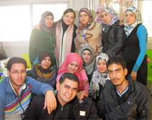

Der Terre-des-Hommes-Herbstbasar zog am Sonntag wieder Besu cher aus der ganzen Region in die Kuppenheimer Wörtelhalle. Rund 2.500 Besucher und 70 Helfer trugen dazu bei, dass syrischen Flüchtlingskin dern im Norden Iraks und in Jordanien ein Stück Gebor genheit und Wärme ge schenkt werden kann.
Heinz Wolf, Sprecher der TdH-Arbeitsgruppe, war sehr zufrieden: „Dank unserer rund 80 Sponsoren und Spender, unseren Besuchern und Mitar beitern konnten wir mehr als 14.000 Euro Erlös für Flücht linge aus Syrien erwirtschaften. Das ist ein Rekordergebnis."
Beim Basar wurden die ers ten kleinen Weihnachtsge schenke eingekauft, während die Kinder in der originell de korierten Märchenhöhle den spannenden Geschichten der Erzählerinnen Edeltraud Galitschke und Jutta Häuser-Hartung lauschten oder verblüfft waren über die Zaubertricks von Björn Stolle. „Jutta Häuser-Hartung ist zum 27. Mal beim Herbstbasar und erzählt Märchen", freute sich Wolf.
Die kleinen Besucher konnten sich vom „Kindgenau"-Team aus Gaggenau schminken las sen, mit den beiden TdH-Kinderrechtsteams aus Rastatt und Gaggenau malen und spielen, eine Bürste binden, sich einen Kreisel drechseln lassen und ihn bemalen oder Seife herstel len. „Ich habe einen Weih nachtsstern und eine Blume aus Seife gemacht. Das duftet nach Rosen, Schokolade und nach Lavendel", erzählte der fünfjährige Santino stolz und lächelte Seifenmacherin Heike Gutekunst aus Muggensturm an. Er kam mit seiner Mutter aus Haueneberstein und traf in Kuppenheim seine Oma aus Ötigheim. „Das ist eine tolle Veranstaltung, weil auch für Kinder so viel geboten wird", lobte seine Oma.
Zum ersten Mal auf dem Basar ist Bürsten binder Thomas Megerle aus Stutensee. „Toll, wie viel Inter esse die Besucher hier haben. Viele lassen sich ihren eigenen Besen binden, und mancher will es auch lernen", sagte er.
Ein Ehepaar aus Au am Rhein hatte sich auf der Bühne die Kunstwerke von Heidrun Dautner, Klaus Ruschmann und Walter Schiementz ange schaut und schlenderte nun durch den Basar. „Wir kom men jedes Jahr und nehmen ein Glas Honig bei Anton Schindler mit. Heute kaufen wir aber auch noch ein Glas von der selbst gemachten Mar melade", berichteten sie. Die Marmelade hat Hermengilde Rastetter gekocht.
Hilfe für syrische Flüchtlingskinder in Jordanien und damit irakische Bürgerkriegsopfer durch den Winter kommen
„Wir arbeiten in den Flücht lingslagern im Irak und in Jor danien mit Terre des Hommes aus Italien und der Schweiz zusammen, die uns um Hilfe gebeten haben, denn dort wird dringend Winterhilfe benötigt", berichtete Wolf. Drei Frauen aus der Arbeitsgruppe Murgtal wollen den im Januar in Kup penheim eintreffenden Flücht lingen helfen, so Wolf.
Hilfe für Flüchtlingskinder im Irak
Bitte helfen Sie mit Ihrer Spende
Rund 1,8 Millionen Menschen sind derzeit im Irak auf der Flucht vor dem Bürgerkrieg und dem Terror der IS-Milizen. Besonders dramatisch ist die Lage der Flüchtlinge in den kurdischen Autonomiegebieten im Nordirak, wo zurzeit 700.000 Iraker und 200.000 Syrer Zuflucht suchen. terre des hommes leistet mit Unterstützung des Bundesministeriums für wirtschaftliche Zusammenarbeit Hilfe für die Flüchtlingsfamilien, insbesondere für die Kinder. Mit dem Projekt werden insgesamt 2.000 Familien mit 3.000 Kindern unterstützt.
Damit Kinder aus den Flüchtlingsfamilien wieder lernen, ihren Alltag zu meistern, werden psychosoziale Lern- und Freizeitangebote geschaffen. Viele Familien blieben nicht lange an einem Ort. Oft zelten sie zunächst in einem Park oder am Rand eines Dorfes, bevor sie in eine Schule oder einem Flüchtlingscamp unterkommen. Damit die Mitarbeiter des Projekts die Kinder trotzdem erreichen, sind sie mit Kleinbussen ausgestattet und bieten ihre Angebote dort an, wo die Kinder sind. Auch die Kinder aus den aufnehmenden Gemeinden können diese wahrnehmen.
Dafür werden im terre des hommes-Projekt freiwillige Helfer, Sozialarbeiter und Lehrer in Themen wie Kindesschutz und Kinderrechte weitergebildet. Durch dieses gezielte Training wird sichergestellt, dass die Kinder vor Missbrauch geschützt sind und altersgerechte Angebote erhalten. Darüber hinaus sollen die Kinder identifiziert werden, die schwere Symptome psychischer Belastungsstörungen zeigen – sie werden an psychologische Fachkräfte weitervermittelt. In den Gemeinden werden Kindesschutz-Komitees gegründet, die bei Problemen als Ansprechpartner dienen.
Viele Kinder mussten mitten im Schuljahr fliehen und haben ihre jeweilige Klasse nicht abgeschlossen. In vielen Schulen wohnen Flüchtlinge, und es kann kein Unterricht stattfinden. Daher dienen die Kleinbusse als Klassenzimmer, aus denen heraus Unterricht angeboten wird. Die ausgebildeten Lehrer des Projektes kommen direkt zu den Kindern und führen Unterrichtseinheiten in arabischer, englischer und kurdischer Sprache durch.
Jahrestag des Taifuns Haiyan am 8. November:
Starke Vorsorge vor Naturkatastrophen für Philippinen dringend
Die philippinische Regierung ist in der Pflicht, die nationalen Vorsorgesysteme zum Schutz vor Naturkatastrophen weiter auszubauen. Dazu gehört vor allem, die gefährdeten Gemeinden im Umgang mit Katastrophensituationen zu schulen und Infrastrukturen für sichere Evakuierungen zu schaffen. Dies erklärte das internationale Kinderhilfswerk terre des hommes anlässlich des Jahrestages des Taifuns Haiyan, der am 8. November letzten Jahres große Zerstörungen anrichtete und rund 7.000 Menschen das Leben kostete.
Nach dem kürzlich vom Bündnis Entwicklung Hilft herausgegeben Weltrisikobericht 2014 sind die Philippinen nach dem pazifischen Inselstaat Vanuatu das Land mit dem weltweit höchsten Risiko, Opfer einer Naturkatastrophe zu werden. »Dazu gehören vor allem Taifune, von denen die Philippinen regelmäßig heimgesucht werden und deren Häufigkeit und Ausmaß angesichts von Erderwärmung und Klimawandel vermutlich noch zunehmen«, erklärte Danuta Sacher, Vorstandsvorsitzende von terre des hommes. »Es ist eine Aufgabe des Staates, die Selbsthilfesysteme vor Ort zu stärken und dafür zu sorgen, dass Erwachsene und Kinder auf Dorfversammlungen, in Schulen und Kindergärten lernen können, sich vor solchen Katastrophen zu schützen.« Die philippinische Regierung müsse endlich den nationalen Katastrophenvorsorgeplan umsetzen.
terre des hommes und seine Partnerorganisationen haben sofort nach dem Taifun Hilfsmaßnahmen gestartet. Mehr als 27.000 Menschen in 73 Dörfern bekamen Lebensmittel und Medikamente, Kochutensilien, Hygieneartikel, Schlafmatten und Moskitonetze sowie Material zum Bau von Notunterkünften. Verängstigte und traumatisierte Kinder erhielten psychosoziale Unterstützung in geschützten Räumen, Spiel- und Therapieangebote, die sich bereits nach dem Tsunami 2004 als erfolgreich erwiesen hatten. Nach der akuten Nothilfe wurden Katastrophenpräventionsmaßnahmen in alle Projektaktivitäten integriert. Mittlerweile ist der Wiederaufbau der Häuser und Infrastruktur gut vorangeschritten, und viele Schulkinder konnten das im März endende Schuljahr abschließen.
Ansprechpartner
Wolfgang Deppisch (Projektinfos) Tel. 07222 / 32927
Heinz Wolf (Sponsoring, Allgemeines) Tel. 07225 / 75543


;)
;)
;)
;)
;)
;)
;)
 Ihre Spende - Stichwort: "Syrien"
Ihre Spende - Stichwort: "Syrien";)